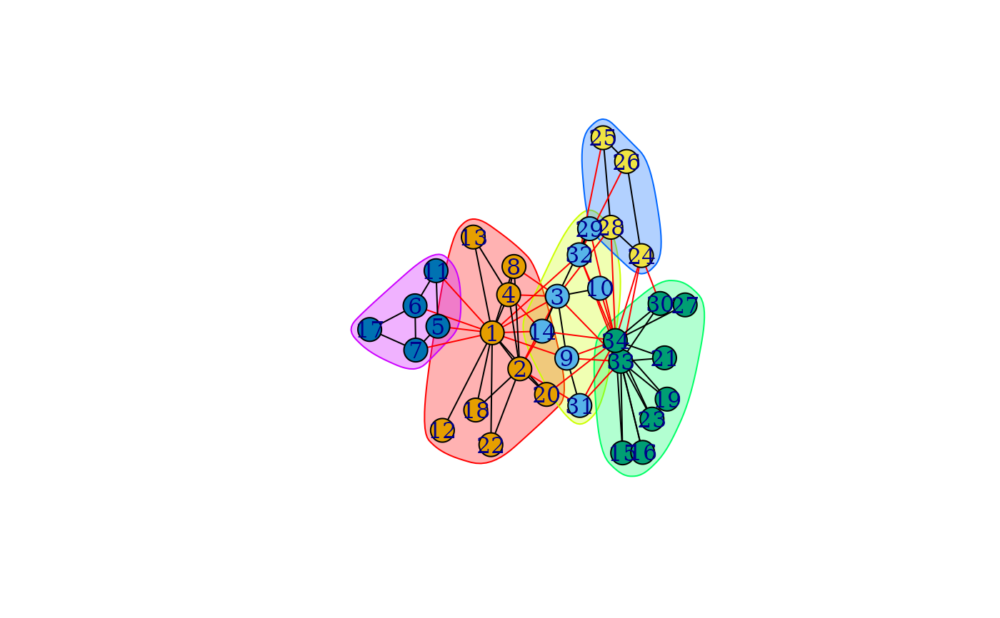

Functions to deal with the result of network community detection
Source:R/community.R
communities.Rdigraph community detection functions return their results as an object from
the communities class. This manual page describes the operations of
this class.
Usage
membership(communities)
# S3 method for class 'communities'
print(x, ...)
# S3 method for class 'communities'
modularity(x, ...)
# S3 method for class 'communities'
length(x)
sizes(communities)
algorithm(communities)
merges(communities)
crossing(communities, graph)
code_len(communities)
is_hierarchical(communities)
# S3 method for class 'communities'
as.dendrogram(object, hang = -1, use.modularity = FALSE, ...)
# S3 method for class 'communities'
as.hclust(x, hang = -1, use.modularity = FALSE, ...)
cut_at(communities, no, steps)
show_trace(communities)
# S3 method for class 'communities'
plot(
x,
y,
col = membership(x),
mark.groups = communities(x),
edge.color = c("black", "red")[crossing(x, y) + 1],
...
)
communities(x)Arguments
- communities, x, object
A
communitiesobject, the result of an igraph community detection function.- ...
Additional arguments.
plot.communitiespasses these toplot.igraph(). The other functions silently ignore them.- graph
An igraph graph object, corresponding to
communities.- hang
Numeric scalar indicating how the height of leaves should be computed from the heights of their parents; see
plot.hclust().- use.modularity
Logical scalar, whether to use the modularity values to define the height of the branches.
- no
Integer scalar, the desired number of communities. If too low or two high, then an error message is given. Exactly one of
noandstepsmust be supplied.- steps
The number of merge operations to perform to produce the communities. Exactly one of
noandstepsmust be supplied.- y
An igraph graph object, corresponding to the communities in
x.- col
A vector of colors, in any format that is accepted by the regular R plotting methods. This vector gives the colors of the vertices explicitly.
- mark.groups
A list of numeric vectors. The communities can be highlighted using colored polygons. The groups for which the polygons are drawn are given here. The default is to use the groups given by the communities. Supply
NULLhere if you do not want to highlight any groups.- edge.color
The colors of the edges. By default the edges within communities are colored green and other edges are red.
- membership
Numeric vector, one value for each vertex, the membership vector of the community structure. Might also be
NULLif the community structure is given in another way, e.g. by a merge matrix.- algorithm
If not
NULL(meaning an unknown algorithm), then a character scalar, the name of the algorithm that produced the community structure.- merges
If not
NULL, then the merge matrix of the hierarchical community structure. Seemerges()below for more information on its format.- modularity
Numeric scalar or vector, the modularity value of the community structure. It can also be
NULL, if the modularity of the (best) split is not available.
Value
print() returns the communities object itself,
invisibly.
length returns an integer scalar.
sizes() returns a numeric vector.
membership() returns a numeric vector, one number for each vertex in
the graph that was the input of the community detection.
modularity() returns a numeric scalar.
algorithm() returns a character scalar.
crossing() returns a logical vector.
is_hierarchical() returns a logical scalar.
merges() returns a two-column numeric matrix.
cut_at() returns a numeric vector, the membership vector of the
vertices.
as.dendrogram() returns a dendrogram object.
show_trace() returns a character vector.
code_len() returns a numeric scalar for communities found with the
InfoMAP method and NULL for other methods.
plot() for communities objects returns NULL, invisibly.
Details
Community structure detection algorithms try to find dense subgraphs in directed or undirected graphs, by optimizing some criteria, and usually using heuristics.
igraph implements a number of community detection methods (see them below),
all of which return an object of the class communities. Because the
community structure detection algorithms are different, communities
objects do not always have the same structure. Nevertheless, they have some
common operations, these are documented here.
The print() generic function is defined for communities, it
prints a short summary.
The length generic function call be called on communities and
returns the number of communities.
The sizes() function returns the community sizes, in the order of their
ids.
membership() gives the division of the vertices, into communities. It
returns a numeric vector, one value for each vertex, the id of its
community. Community ids start from one. Note that some algorithms calculate
the complete (or incomplete) hierarchical structure of the communities, and
not just a single partitioning. For these algorithms typically the
membership for the highest modularity value is returned, but see also the
manual pages of the individual algorithms.
communities() is also the name of a function, that returns a list of
communities, each identified by their vertices. The vertices will have
symbolic names if the add.vertex.names igraph option is set, and the
graph itself was named. Otherwise numeric vertex ids are used.
modularity() gives the modularity score of the partitioning. (See
modularity.igraph() for details. For algorithms that do not
result a single partitioning, the highest modularity value is returned.
algorithm() gives the name of the algorithm that was used to calculate
the community structure.
crossing() returns a logical vector, with one value for each edge,
ordered according to the edge ids. The value is TRUE iff the edge
connects two different communities, according to the (best) membership
vector, as returned by membership().
is_hierarchical() checks whether a hierarchical algorithm was used to
find the community structure. Some functions only make sense for
hierarchical methods (e.g. merges(), cut_at() and
as.dendrogram()).
merges() returns the merge matrix for hierarchical methods. An error
message is given, if a non-hierarchical method was used to find the
community structure. You can check this by calling is_hierarchical() on
the communities object.
cut_at() cuts the merge tree of a hierarchical community finding method,
at the desired place and returns a membership vector. The desired place can
be expressed as the desired number of communities or as the number of merge
steps to make. The function gives an error message, if called with a
non-hierarchical method.
as.dendrogram() converts a hierarchical community structure to a
dendrogram object. It only works for hierarchical methods, and gives
an error message to others. See stats::dendrogram() for details.
stats::as.hclust() is similar to as.dendrogram(), but converts a
hierarchical community structure to a hclust object.
ape::as.phylo() converts a hierarchical community structure to a phylo
object, you will need the ape package for this.
show_trace() works (currently) only for communities found by the leading
eigenvector method (cluster_leading_eigen()), and
returns a character vector that gives the steps performed by the algorithm
while finding the communities.
code_len() is defined for the InfoMAP method
(cluster_infomap() and returns the code length of the
partition.
It is possibly to call the plot() function on communities
objects. This will plot the graph (and uses plot.igraph()
internally), with the communities shown. By default it colores the vertices
according to their communities, and also marks the vertex groups
corresponding to the communities. It passes additional arguments to
plot.igraph(), please see that and also
igraph.plotting on how to change the plot.
See also
See plot_dendrogram() for plotting community structure
dendrograms.
See compare() for comparing two community structures
on the same graph.
Community detection
as_membership(),
cluster_edge_betweenness(),
cluster_fast_greedy(),
cluster_fluid_communities(),
cluster_infomap(),
cluster_label_prop(),
cluster_leading_eigen(),
cluster_leiden(),
cluster_louvain(),
cluster_optimal(),
cluster_spinglass(),
cluster_walktrap(),
compare(),
groups(),
make_clusters(),
modularity.igraph(),
plot_dendrogram(),
split_join_distance(),
voronoi_cells()
Author
Gabor Csardi csardi.gabor@gmail.com
Examples
karate <- make_graph("Zachary")
wc <- cluster_walktrap(karate)
modularity(wc)
#> [1] 0.3532216
membership(wc)
#> [1] 1 1 2 1 5 5 5 1 2 2 5 1 1 2 3 3 5 1 3 1 3 1 3 4 4 4 3 4 2 3 2 2 3 3
plot(wc, karate)
